Glossary¶
This glossary is partly extracted from the glossary of SeisComP.
SeisComP terms¶
- binding
A binding is a set of configuration options to configure the connection between a module and a station. Bindings are located in
etc/key/modulename/station_NET_STA. They are either written to the database or used to create native configuration files for standalone modules. The concepts section of SeisComP provides more details.- module
A module is usually a binary executable that does a certain job such as seedlink or scautopick. The concepts section of SeisComP provides more details.
- plugin
An extension to a module. The concepts section of SeisComP provides more details.
- profile
A profile is a special binding. Instead of defining the same set of configuration options again and again for many stations a profile can be used. Instead of configuring a stations like:
seedlink scautopick
which refers to
etc/key/seedlink/station_NET_STAandetc/key/scautopick/station_NET_STAa profile can be given:seedlink:geofon scautopick:teleseismic
which refers to
etc/key/seedlink/profile_geofonandetc/key/scautopick/profile_teleseismic. Changing the profile changes the bindings of all stations that use this profile.- RecordStream
Interface to access data records from data processing modules. SeisComP applications access waveform data through the RecordStream interface. Powerful additional RecordStream implementations are delivered by gempa GmbH with the CAPS and the RecordStream package.
- standalone module
A module that needs to convert the configuration or do not use the default configuration options (see below) is called a standalone modules. Examples for standalone modules are seedlink, slarchive or slmon.
- trunk
The module and library collection which forms and uses the SeisComP framework. The Application class is part of this framework. All trunk modules share a common configuration schema and a database with Inventory, EventParameters, Configuration, Routing and QC schemas. Representatives are scautoloc and scautopick and the GUI collection with scolv, scmv, scrttv and scesv.
Scientific and technical terms¶
- AIC
Aikaike Information Criterion used for refinement of phase picks. Phase pickers for picking P and S phase arrivals based on AIC may reach high accuracy if tuned well.
- aftershocks
Earthquakes that follow a large earthquake in a sequence. They are smaller than the mainshock and within 1-2 fault lengths distance from the mainshock fault. Aftershocks can continue over a period of weeks, months, or years, decreasing in frequency with time. In general, the larger the mainshock, the larger and more numerous the aftershocks, and the longer they will continue.
- amplitude
General term used for an observation of a wave at a particular time.
QuakeML object. Amplitudes are computed, e.g. for computing magnitudes of different types. Another type is the SNR. Amplitude computation depends on the type.
In SeisComP magnitudes are computed automatically by scautopick and scamp or interactively by scolv.
- array
A set of observing sensors at which the observed and sought signal are mostly coherent. If the sensors are seismometers or barometers measuring infrasound, the terms seismic array or infrasound array are used, respectively. Arrays are different from a network by the applied methods, e.g. F-K analysis, beam forming or vespagram analysis.
- ATF
The array transfer function or array response function describes the sensitivity and resolution of an array to signals propagating through the array with a particular azimuth, slowness and frequency.
- array response function
A synonym of ATF or array transfer function.
- array transfer function
A synonym of ATF or array response function.
- ArcLink
ArcLink complements SeedLink by providing access to archived waveform data. Arclink was distributed with SeisComP until version 3.0.
- arrival
The appearance of seismic energy on a seismic record
QuakeML object. The detected phase onset associated to an origin in SeisComP.
- arrival time
The time at which a particular phase of a seismic wave arrives at a station.
- asthenosphere
The ductile part of the Earth, just below the brittle lithosphere, in the upper mantle. The lithosphere/asthenosphere reaches down to about 200 km.
- azimuth
In general a direction measured clock-wise in degrees against north. In seismology used to measure the direction from a seismic source to a seismic station recording this event.
- beam
The sum of signals observed at an array shifted with respect to the array reference coordinate assuming a particular slowness and azimuth. Optimum values for slowness and azimuth can be found, e.g. by F-K analysis.
- beam packing
Equivalent to the F-K analysis where the beam and the related parameters such as beam power or semblance are formed in the time domain. Seismograms from the array stations are shifted according to the considered ranges of slowness and backazimuth or wave number and summed to form the beam.
- beam power
The energy of beam within a defined time window.
- backazimuth
The direction from the seismic station towards a seismic source, measured in degrees clock-wise against north; sometimes also just called azimuth.
- Benioff zone
- body wave
A seismic wave that propagates through the interior of the Earth, as opposed to surface waves that propagate near the Earth’s surface. P and S waves, which shake the ground in different ways, are examples.
- body wave magnitude
- calibration
The process of determining the response function (distortion of the input signal) and sensitivity of an instrument or its derived component.
- CAPS
- CAV
cumulated absolute velocity
- CI
Characteristic Intensity
- channel code
Description of characteristics of data related to the recording sensor and data logger as well as instrument responses, sampling frequencies, etc. The standard codes are defined in the SEED manual.
- Circum-Pacific belt
The zone surrounding the Pacific Ocean that is characterized by frequent and strong earthquakes and many volcanoes as well as high tsunami hazard. Also called the Ring of Fire.
- coda
The tail of a seismic signal, usually with exponentially decaying amplitudes, which follow a strong wave arrival. Coda waves are due to scattering and superposition of multi-path arrivals.
- coda phase
A detection of a single phase of unknown path found within the coda signal envelope, designated as tx, e.g. Px or Sx.
- coherent
Seismic signals detected on various seismic sensors of a seismic array or network are said to be coherent if they are related to each other in time, amplitude and/or waveform because they come from the same seismic source.
- color
Colors are given in hexadecimal representation or by color keyword names.
- color keyword name
Color keyword names allow the specification of color values by names representing color codes instead of RGB or hexadecimal representation. Find examples on the website of W3C. Color keyword names have been introduced in SeisComP in version 4.4.0.
- convolution
A mathematically equivalent operation that describes the action of a linear (mechanical and/or electronic) system on a signal, such as that of a filter on a seismic signal.
- core
The innermost part of the Earth. The outer core extends from about 2900 to about 5120 km below the Earth’s surface and consists in its main components of a mixture of liquid iron and nickel. The inner core is the central sphere of the Earth with a diameter of 1250 km and consists of solid metal.
- Core-Mantle Boundary(CMB)
- corner frequency
The frequency at which the curve representing the Fourier amplitude spectrum of a recorded seismic signal abruptly changes its slope. For earthquakes, this frequency is a property of the source and related to fault size, rupture velocity, source duration and stress drop in the source. Also the frequency at which the transfer function / magnification curve of a recording system changes its slope.
- creep
Slow, more or less continuous movement occurring on faults due to ongoing tectonic deformation. Also applied to slow movement of landslide masses down a slope because of gravitational forces. Faults that are creeping do not tend to have large earthquakes. This fault condition is commonly referred to as unlocked.
- crust
The outermost major layer of the Earth, ranging from about 10 to 70 km in thickness worldwide. The oceanic crust is thinner (about 10 to 15 km) than the continental crust (about 25 to 70 km). The uppermost 15-35 km of the crust is brittle enough to produce earthquakes. The seismogenic crust is separated from the lower crust by the brittle-ductile boundary. The crust is usually characterized by P-wave velocities below 8 km/s (average velocity of about 6 km/s).
- delay
The time difference between the arrival time and the end time of the last record achieved plus the half record length. The delay can be computed by scqc.
- depth Phase
- detection
Identification of an arrival of a seismic signal with amplitudes above and/or signal shape (waveform) different from seismic noise.
- directivity
An effect of a propagating fault rupture whereby the amplitudes of the generated ground motions depend on the direction of wave propagation with respect to fault orientation and slip direction (radiation pattern). The directivity and thus the radiation pattern is different for P and S waves.
- EDA
Effective Design Acceleration
- EIDA
European Integrated Data Archive: http://www.orfeus-eu.org/data/eida/
- epicenter
Vertical projection of the hypocenter to the surface.
- event
General term used for a localized disturbance (earthquake, explosion, etc.) which generates seismic waves.
QuakeML object. The event is the parent object of several origins. Among these origins a preferred origin and its preferred magnitude is selected to represent the event. An event can be seen as an earthquake folder which contains information about earthquake parameters.
- fault-plane solution
Representation of the fault activated in an earthquake and the caused direction of slip on the fault by a circle with two intersecting curves looking like a beach ball. A fault-plane solution is found by the analysis of seismic records at many stations of an earthquake to obtain the radiation pattern. From the radiation pattern the fault parameter and the slip direction are determined using a stereographic projection or its mathematical equivalent. The most common analysis uses the direction of first motion of P wave onsets and yields two possible orientations for the fault rupture and the direction of seismic slip. Another technique is to use the polarization of teleseismic S waves and/or to measure amplitude ratios between different phase types. Further inferences can be made from these data concerning the principal axes of stress in the region of the earthquake. The principal stress axes determined by this method are the compressional axis (also called the P-axis, i.e. the axis of greatest compression, or s1), the tensional axis (also known as the T-axis, i.e., the axis of least compression, or s3), and the intermediate axis (s2).
- filter(ing)
A filter attenuates certain frequencies of a (seismic) signal and amplifies others. The process of filtering can be accomplished electronically while recording or numerically in a computer. Filtering also occurs naturally as seismic energy passes through the Earth.
The available and integrated filters in SeisComP are documented in the SeisComP documentation.
- first motion
The first noticeable displacement in a seismogram caused by the arrival of a P wave at the seismometer. Upward motion of the ground at the seismometer indicates a dilatation at the source, downward motion indicates a compression. Due to the presence of seismic noise the proper polarity of the first motion may be difficult to recognize.
- F-K
F-K refers to a 2-D Fourier analysis where the base functions are defined, e.g. by ranges of frequency and wave number. F-K analysis is applied for signal detection by transforming time series recorded at several sensors, e.g. seismic or infrasound array stations to the time and space domain.
The equivalent to F-K analysis in the time domain is beam packing.
- focal mechanism
- foreshocks
Earthquakes that occur in a series of earthquakes before the largest earthquake, termed the mainshock. Foreshocks may precede the mainshock by seconds to weeks and usually originate at or near the focus of the larger earthquake. Not all mainshocks have foreshocks.
- Fourier spectrum
The relative amplitudes (and phase angles) at different frequencies that are derived from a time series by Fourier analysis.
- Fourier analysis
The mathematical operation that resolves a time series (for example, a recording of ground motion) into a series of numbers that characterize the relative amplitude and phase components of the signal as a function of frequency.
- frequency
Number of cycles of a repeating signal per unit time, typically per second.
- frequency domain
The transformation of a seismic signal from the time domain (as a seismogram) to the frequency domain is conducted by a Fourier analysis. The signal is represented in the frequency domain by the amplitude and phase components as a function of frequency (see spectrum). The representations of a seismic signal in the time and in the frequency domain are equivalent in a mathematical sense. For some procedures of data analysis the time-domain representation of a seismic record is more suitable while for others the frequency-domain approach is more appropriate and efficient.
- GDS
- gempa GmbH
gempa GmbH is a spin-off from GFZ offering a range of services and products to monitor, process and analyze seismicity. It is the main development and service company for SeisComP.
- GEOFON
GEOFON (https://geofon.gfz-potsdam.de) is part of the Modular Earth Science Infrastructure (MESI) at GFZ.
- geometrical spreading
The component of reduction in wave amplitude due to the radial spreading of seismic energy with increasing distance from a given source.
- GFZ
Helmholtz Centre Potsdam German Research Centre for Geosciences. SeisComP was originally developed at GFZ.
- GMM
Ground Motion Model
- GMPE
Ground Motion Prediction Equation
- Green’s function
A mathematical representation that, in reference to earthquake shaking, is used to represent the ground motion caused by instantaneous slip on a small part of a fault. Green’s functions can be summed over a large fault surface to compute the ground shaking for a large earthquake rupturing a fault of finite size. The fractional fault-slip events that are summed can be records from small earthquakes on the fault or they can be theoretically computed small-earthquake records.
- Gutenberg discontinuity
The seismic velocity discontinuity marking the core-mantle boundary (CMB) at which the velocity of P waves drops from about 13.7 km/s to about 8.0 km/s and the velocity of S waves drops from about 7.3 km/s to 0 km/s. The CMB reflects the change from the solid mantle material to the fluid outer core.
- GUI
Graphical use interface, e.g. scolv.
- hypocenter
Coordinates of an earthquake point source. Hypocenters based on P and S wave first arrivals point to the place where the rupture process starts. For large earthquakes the source location determined by P wave first arrivals can differ significantly from the location of maximum energy release.
- Ia
Arias Intensity
- incident
An incident is an object typically derived from an event for which a hypocenter and a magnitude have been determined. Incidents contain the event parameters and additionally the parameters calculated by the generating module such as SIGMA or TOAST.
- infrasound array
An array of barometers measuring infrasound signals.
- intensity
A measure of the effects of an earthquake at a particular place at the Earth’s surface on humans and (or) structures. The intensity at a point depends not only upon the strength of the earthquake (magnitude) but also upon the distance from the earthquake, the depth of the hypocenter and the local geology at that point. Several scales exist, most of them giving the intensity in 12 degrees, usually written as Roman numerals. Most frequently used are at present the European Macroseismic Scale (EMS-98), and in the United States the Modified Mercalli scale and the Rossi-Forel scale. There are many different intensity values for one earthquake, depending on how far you are away from the epicenter; this is unlike the magnitude value, which is one number for each earthquake as a measure of the amount of seismic wave energy released by it.
- interplate/intraplate
Intraplate pertains to processes within the Earth’s crustal plates. Interplate pertains to processes between the plates.
- interplate coupling
The qualitative ability of a subduction thrust fault to lock and accumulate stress. Strong interplate coupling implies that the fault is locked and capable of accumulation stress whereas weak coupling implies that the fault is unlocked or only capable of accumulating low stress. A fault with weak interplate coupling could be aseismic or could slip by creep.
- inventory
The inventory is the collection of all available meta data related to network, station, location code, station channel code, characteristics of sensors and data loggers, etc. More details are given in the concepts section of the SeisComP documentation.
- latency
Time difference between the end times of consecutive records. The latency can be computed by scqc.
- lithosphere
The outer solid part of the Earth, including crust and uppermost mantle. The lithosphere is about 100 km thick, although its thickness is age-dependent (older lithosphere is thicker). At some locations the lithosphere below the crust is brittle enough to produce earthquakes by faulting, such as within a subducted oceanic plate.
- location code
Description of particular sensor location associated to a station. The standard location codes are defined in the SEED manual.
- Love wave
A major type of surface waves having a horizontal motion that is transverse (or perpendicular) to the direction of propagation. It is named after A. E. H. Love, the English mathematician who discovered it.
- leaky mode
A seismic surface wave which is imperfectly trapped, e.g., within a low-velocity layer or a sequence of layers, so that its energy leaks or escapes across a layer boundary causing some attenuation.
- low-velocity layer/zone
Any layer in the Earth in which seismic wave velocities are lower than in the layers above and below.
- magnification curve
A diagram showing the dependence of amplification, e.g. of the seismic ground motion by a seismograph, as a function of frequency.
- magnitude
A number that characterizes the relative size of an earthquake. The magnitude is based on amplitude measurement of the maximum motion recorded by a seismograph (sometimes for waves of a particular frequency), corrected for the attenuation with distance. Several scales have been defined, but the most commonly used are:
local magnitude (ML), commonly referred to as “Richter magnitude”
surface-wave magnitude (Ms)
body-wave magnitude (mb)
moment magnitude (Mw).
The magnitude scales 1-3 have limited range and applicability and do not satisfactorily measure the size of the largest earthquakes. The moment magnitude (Mw) scale, based on the concept of seismic moment, is uniformly applicable to all earthquake sizes but is more difficult to compute than the other types. In principal, all magnitude scales could be cross calibrated to yield the same value for any given earthquake, but this expectation has proven to be only approximately true, thus the magnitude type as well as its value is needed to be specified.
Additional or modified magnitudes can be computed by providing plugins.
In SeisComP magnitudes are computed automatically by scmag or interactively by scolv.
- magnitude, local (ML)
Magnitude scale introduced by Richter in the early 1930s (Richter, 1935) to have a common scale for the strength of earthquakes. The basic observation is the systematic decay of the logarithm of the maximum amplitudes with increasing distance for different earthquakes described by:
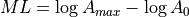
with A0 as amplitude of a reference event. For the reference event ML = 0 the formula can be rewritten to
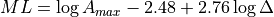
with
 being the distance of the station to the earthquake location. ML
is a magnitude scale for
recordings of earthquakes smaller than ML 7 at regional stations. It is
usually a measure of the
regional-distance S-wave on horizontal component records.
The original formula is only valid for records from a Wood-Anderson torsion
seismometer with a natural period of
0.8 s and shallow earthquakes in California. Therefore calibration functions
for other regions and wider depth ranges are necessary.
A Wood-Anderson seismometer is simulated.
being the distance of the station to the earthquake location. ML
is a magnitude scale for
recordings of earthquakes smaller than ML 7 at regional stations. It is
usually a measure of the
regional-distance S-wave on horizontal component records.
The original formula is only valid for records from a Wood-Anderson torsion
seismometer with a natural period of
0.8 s and shallow earthquakes in California. Therefore calibration functions
for other regions and wider depth ranges are necessary.
A Wood-Anderson seismometer is simulated.For amplitudes measured on the vertical component records, additional correction factors have to be applied. ML saturates at magnitudes around 7 because the maximum amplitudes of larger earthquakes occur at longer periods than the bandpass of 0.1 s and 3 s for the magnitude calculation.
In SeisComP a modified local magnitude MLv is determined by simulation of a Wood-Anderson instrument and then measuring the amplitude in a 150 s time window on the vertical component of station with distances smaller than 8°.
Amplitude unit in SeisComP: millimeter (mm)
Read the SeisComP documentation of ML for more details and the configuration.
- magnitude, local custom (MLc)
The local magnitude measured on the horizontal components with custom parametric calibration function, configurable amplitude filtering, Wood-Anderson simulation and distance measure.
Amplitude unit in SeisComP: millimeter (mm)
Read the technical documentation of MLc for more details and the configuration.
- magnitude, local horizontal (MLh)
The local magnitude computed from amplitudes measured on the horizontal components with a modified parametric calibration function as compared to ML.
Amplitude unit in SeisComP: millimeter (mm)
Read the SeisComP documentation of MLh for more details and the configuration.
- magnitude, local GNS/GEONET (MLr)
Local magnitude calculated from MLv amplitudes based on GNS/GEONET specifications for New Zealand.
Read the SeisComP documentation of MLr for the configuration.
- magnitude, local vertical (MLv)
The ML magnitude with amplitudes measured on the vertical component instead of the horizontals.
Amplitude unit in SeisComP: millimeter (mm)
Read the SeisComP documentation of MLv for more details and the configuration.
- magnitude, Nuttli (MN)
Nuttli magnitude for Canada and other Cratonic regions.
Amplitude unit in SeisComP: meter/second (m/s)
Read the SeisComP documentation of Mn for the configuration.
- magnitude, body-wave (mb)
Magnitude developed for teleseismic body waves. mb is defined on the amplitude of the first few cycles of the P-wave restituted to WWSSN_SP.
Amplitude unit in SeisComP: nanometer (nm)
Read the technical documentation of mb for more details and the configuration.
- magnitude, broadband body-wave (mB_BB)
mB_BB is the term recommended by the IASPEI commission for term:magnitude, broadband body-wave (mB) which is used in SeisComP.
- magnitude, broadband body-wave (mB)
mB is a magnitude based on body waves like mb, but with the amplitude measured in a broad frequency range and longer time windows. mB is used as a synonym for mB_BB.
Amplitude unit in SeisComP is nanometer per second (nm/s)
Read the technical documentation of MB_BB for more details and the configuration.
- magnitude, cumulative body-wave (mBc)
mBc is the cumulative body-wave magnitude. See Bormann and Wylegalla (2005) and Bormann and Saul (2009) for details.
- magnitude, surface wave (Ms)
Ms is a magnitude scale based on teleseismic surface waves. Historically, Ms is based on measurements of the maximum horizontal true ground motion displacement amplitudes
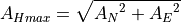
in the total seismogram at periods around 20 s. For shallow earthquakes the dominant long-period signals are the surface waves. The period of 20 s corresponds to the Airy phase, a local minimum in the group velocity dispersion curve of Rayleigh surface waves. For measuring amplitudes a correction for the WWSSN_LP instrument response is applied.
The Moscow-Prague equation for surface wave magnitude is given by
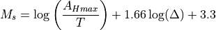
where T is the measured period.
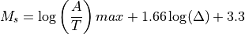
Here, the maximum ground particle velocity, (A/T)max, is used instead of the AHmax to allow a broader spectrum of dominant periods. This formula is valid for distances of 2° to 160° and source depths smaller than 50 km.
Amplitude unit in SeisComP is meter per second (m/s)
- magnitude, surface wave (Ms_20)
Ms_20 is the Ms surface-wave magnitude at T=20 s period based on the recommendations by the IASPEI magnitude working group issued on 27 March, 2013.
Amplitude unit in SeisComP: nanometer (nm)
Read the SeisComP documentation of Ms_20 for more details and the configuration.
- magnitude, broadband surface wave (Ms(BB))
Ms(BB) is a broadband magnitude scale based on teleseismic surface waves. In contrast to Ms, amplitudes for Ms(BB) are measured as the maximum on vertical true ground motion velocity seismograms without instrument simulation or restitution.
The Moscow-Prague equation for surface wave magnitude is applied as given by
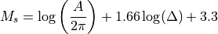
Amplitude unit in SeisComP: meter per second (m/s)
Period range: all
Distance range: 2 - 160°
Depth range: 0 - 100 km
Time window: distance (km) / 3.5 km/s + 30 s
- magnitude, duration (Md)
The duration magnitude measured on the coda wave train.
Read the SeisComP documentation of Md for more details and the configuration.
- magnitude, JMA (M_JMA)
M(JMA) is a magnitude similar to the Ms, but the formula is calibrated for instruments with 5 s period at local distances. The data set for the calibration was gained by the Japan Meteorological Agency (JMA).
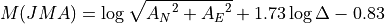
This equation is valid for local (< 2000 km) and shallow (< 80 km) earthquakes. For deeper earthquakes additional correction functions have to be applied (Katsumata, 1996).
Amplitude unit in SeisComP: micrometer (um)
Time window: 150 s
Epicentral distance range: 0 - 20°
Depth range: 0 - 80 km
- magnitude, moment (Mw)
The moment magnitude is a magnitude scale related to the seismic moment M0 and thus to the released seismic energy. To obtain Mw the seismic moment is first determined, e.g. by a moment tensor inversion. Then the Mw is gained by the following standard relationship between seismic moment and the moment magnitude (M0 in cgs units of dyn*cm):
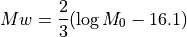
This equation is analog to the relation between Ms and M0.
- magnitude, averaged moment (Mw(avg))
Moment magnitude derived as a weighted average of other magnitudes.
- magnitude, broadband P-wave moment (Mwp)
The Mwp is a rapid estimate of the moment magnitude based on the first-arrival P waves on broadband seismograph records. The displacement seismograms of the P wave portion are considered as source time function approximation. The seismic moment is estimated for each station by integrating the displacement records. The combination of multiple records results in an estimation of the moment magnitude without correction for the source mechanism (Tsuboi et al., 1995).
Amplitude unit in SeisComP: nanometer times second (nm*s)
Time window: 95 s
Epicentral distance range: 5 - 105°
- magnitude, derived mB (Mw(mB))
Moment magnitude derived from mB magnitudes using linear conversion:
Mw(mB) = 1.30 mB - 2.18
- magnitude, derived Mwp (Mw(Mwp))
Moment magnitude derived from Mwp magnitudes using linear conversion after Whitmore et al. (2002):
Mw(Mwp) = 1.31 Mwp - 1.91
- magnitude, summary (M)
Summary magnitude derived from multiple other magnitudes.
- mainshock
The largest earthquake in a sequence, sometimes preceded by one or more foreshocks, and almost always followed by many aftershocks.
- mantle
The part of the Earth’s interior between the core and the crust.
- microearthquake
An earthquake that is not perceptible by man and can be recorded by seismographs only. Typically, a microearthquake has a magnitude of 2 or less on the Richter scale.
- microseism
In a broader sense: A more or less continuous motion in the Earth in a wide frequency range that is unrelated to any earthquake and caused by a variety of usually uncorrelated (incoherent) natural and artificial (man-made) sources.
In a more specific sense: That part of seismic noise that is generated by wave motions on lakes and oceans and their interaction with shores, typically with periods between about 2 to 9 s (the stronger secondary microseisms), and 11 to 18 s (the weaker primary microseisms).
- miniSeed
miniSeed is the standard for the exchange of seismic time series. It uses a fixed record length and applies data compression.
- MMI
Modified Mercalli Intensity
- Moho
The abbreviation for the Mohorovičić discontinuity.
- Mohorovičić discontinuity
The discontinuity in seismic velocities that defines the boundary between crust and mantle of the Earth. Named after the Croatian seismologist Andrija Mohorovičič (1857-1936) who discovered it. The boundary is between 20 and 60 km deep beneath the continents and between 5 and 10 km deep beneath the ocean floor.
- moment tensor
Moment tensors or seismic moment tensors describe the equivalent forces due to seismic point sources, e.g. earthquakes with rupture dimensions much smaller than the distance at which they are observed.
- network
A set of stations typically maintained by one or more institutions and tuned to record particular signals.
- network magnitude
The network magnitude is a magnitude value summarizing several station magnitude values of one origin. Read the documentation of scmag for the details.
QuakeML object.
- noise (seismic)
Incoherent natural or artificial perturbations caused by a diversity of agents and distributed sources. One usually differentiates between ambient background noise and instrumental noise. The former is due to natural (ocean waves, wind, rushing waters, animal migration, ice movement, etc.) and/or man-made sources (traffic, machinery, etc.), whereas instrumental (internal) noise may be due to the flicker noise of electronic components and/or even Brownian molecular motions in mechanical components. Digital data acquisition systems may add digitization noise due to their finite discrete resolution (least significant digit). Very sensitive seismic recordings may contain all these different noise components, however, usually their resolution is tuned so that only seismic signals and to a certain degree also the ambient noise are resolved. Disturbing noise can be reduced by selecting recording sites remote from noise sources, installation of seismic sensors underground (e.g., in boreholes, tunnels or abandoned mines) or by suitable filter procedures (improvement of the signal-to-noise ratio).
- Nyquist frequency
Half of the digital sampling rate. It is the minimum number of counts per second needed to define unambiguously a particular frequency. If the seismic signal contains energy in a frequency range above the Nyquist frequency the signal distortions are called aliasing.
- onset
The first appearance of a seismic signal on a record.
- origin
Location (hypocenter), Time and strength estimation of an earthquake based on seismic phases and amplitudes
QuakeML object
- origin time
Estimated source time of an event belonging to a certain origin; describes the rupture start time. Attribute of the QuakeML object Origin, see origin.
- phase
A stage in periodic motion, such as wave motion or the motion of an oscillator, measured with respect to a given initial point and expressed in angular measure.
A pulse of seismic energy arriving at a definite time, which passed the Earth on a specific path.
Attribute of the QuakeML object Arrival, see arrival.
- P phase
The P phase is the arrival of the direct P wave that traveled through the Earth’s crust and mantle observed in epicentral distances up to 100°.
- Pdiff phase
The long-period P-wave energy can be diffracted at the CMB forming at distances larger than 100° the Pdiff phase. The reason for the diffraction is the large reduction of the P wave velocity at the CMB from about 13.7 km/s to 8 km/s. The amplitude of Pdiff is relatively small. Pdiff is observed at distances where the outer core forms the “core shadow” (see also PKP phase).
- Pg phase
Pg is the direct P wave arriving first in local distances less than 100 km. For larger distances Pn arrives first (see Pn phase for details).
- PGA
Peak Ground Acceleration
- PGD
Peak Ground Displacement
- PGV
Peak Ground Velocity
- Pn phase
Pn is the P head wave along the Moho arriving first at local distances larger than 100 km (depending on the crustal thickness). Pn has usually smaller amplitudes than Pg.
- PcP phase
The P wave that is reflected at the CMB forms the PcP. At epicentral distances between 30° and 55° PcP is often recorded as sharp pulse.
- PKiKP phase
A P wave that travels through the Earth’s crust and mantle and is reflected at the outer core-inner core boundary. At distances between 100° and 113° PKiKP can be the first arrival if no Pdiff is observed.
- PKP phase
The direct P waves traversing the Earth’s crust, mantle and outer core without reflection is called PKP. The outer core is a fluid causing a strong refraction at the CMB into the outer core. The strong refraction of the seismic rays into the core causes a “core shadow” that commences at epicentral distances of around 100° and stretches to around 140°. Only Pdiff can be observed in this distance range. PKP is the first arrival at distances larger than around 143°. At a distance of 144° P waves with several paths through the Earth’s core arrive at the same time (caustic) and form a strong arrival.
- PP phase
PP is a reflected P wave at the Earth’s surface traversing the Earth’s crust and mantle.
- pP phase
A P wave that has a takeoff angle of greater than 90° at the source and therefore is first reflected at the surface near the epicenter. The pP is a depth phase. For shallow events and at teleseismic distances pP has nearly the same path as the P wave except for the path from hypocenter of the earthquake to the reflection point at the surface.
- SEED
Standard for the Exchange of Earthquake Data, a data format for seismological data and metadata (inventory). It is controlled as a standard by the International Federation of Digital Seismograph Networks (FDSN). The current version is 2.4, updated August 2012. See the SEED Reference Manual for details.
- S phase
The S phase is the arrival of the direct S wave that traveled through the Earth’s crust and mantle observed in epicentral distances up to 100°.
- Sg phase
Sg is the direct S wave arriving first in local distances less than 100 km. For larger distances Sn arrives first (see Sn phase for details).
- Sn phase
Sn is the S head wave along the Moho arriving first at local distances larger than 100 km (depending on the crustal thickness). Sn has usually smaller amplitudes than Sg.
- sP phase
A P wave starting as an S phase at the source and arriving as P. The S phase has a takeoff angle greater than 90° at the source and therefore is first reflected at the surface near the epicenter and then converted into a P wave phase. The sP is therefore a depth phase. For shallow events and at teleseismic distances sP has nearly the same path as the P wave except for the path from hypocenter of the earthquake to the reflection point at the surface.
- pick
Automatic or manual determined phase onset
QuakeML object
- polarity
In seismology the direction of first motion on a seismogram, either up (positive, compression) or down (negative, dilatation or relaxation).
- polarization
The shape and orientation in space of the ground-motion particle trajectory. It differs for different types of seismic waves such as P, S and surface waves and may be ± linear or elliptical, prograde or retrograde. It is also influenced by heterogeneities and anisotropy of the medium in which the seismic waves propagate and depends on their frequency or wavelength, respectively. The polarization of ground motion may be reconstructed by analyzing three-component seismic recordings.
- preferred magnitude
The network magnitude representing the strength of an event best as automatically selected by scevent or interactively.
Attribute of the QuakeML object Event, see event.
- preferred origin
The origin representing the location of an event best; generally, the location based on the most picks or reviewed/revised by an operator. The preferred origins is automatically selected by scevent or interactively.
Attribute of the QuakeML object Event, see event.
- QuakeLink
QuakeLink is a protocol with an appendant software implementation to exchange earthquake and inventory information in real-time or time window based.
- QuakeML
A XML scheme developed as an open standard for seismological meta data exchange (http://www.quakeml.org).
- radiation pattern
Dependence of the amplitudes of seismic P and S waves on the direction and take-off angle under which their seismic rays have left the seismic source. It is controlled by the type of source mechanism, e.g., the orientation of the earthquake fault plane and slip direction in space.
- Rayleigh wave
A seismic surface wave causing a retrograde, elliptical motion of a particle at the free surface, with no transverse motion. It is named after Lord Rayleigh (1842-1919), who predicted its existence.
- ray theory
Theoretical approach, which treats wave propagation as the propagation of seismic rays. It is an approximation, which yields good results for short wave length (high-frequency approximation) and allows easy calculations of travel times.
- ray-tracing method
Computational method of calculating ground-shaking estimates that assumes that the ground motion is composed of multiple arrivals of seismic rays and related energy bundles (Gauss beams) that leave the source and are reflected or refracted at velocity boundaries according to Snell’s Law. The amplitudes of reflected and refracted waves at each boundary are recalculated according to the Law of Conservation of Energy.
- recurrence interval
The average time span between large earthquakes at a particular site. Also termed ‘return period’.
- reflection
The energy or wave from a seismic source that has been returned (reflected) from an interface between materials of different elastic properties within the Earth, just as a mirror reflects light.
- refraction
The deflection, or bending, of the ray path of a seismic wave caused by its passage from one material to another having different elastic properties.
Bending of a tsunami wave front owing to variations in the water depth along a coastline.
- relaxation theory
A concept in which radiated seismic energy is released from stored strain energy during the slip along a fault until the adjacent fault blocks reach a new state of equilibrium.
- residual
The difference between the measured and predicted values of some quantity (e.g., theoretical and measured phase arrival time).
Attribute of QuakeML object Arrival, see arrival.
- Ring of Fire
The zone of volcanoes and earthquakes surrounding the Pacific Ocean which is called the Circum-Pacific belt; about 90% of the world’s earthquakes occur there. The next most seismic region (5 - 6 % of earthquakes) is the Alpide belt.
- RMS
Abbreviation for root mean square
- root mean square (RMS)
Also referred to as RMS. A statistical measure of the magnitude of a varying quantity defined as
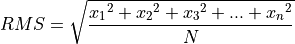
for the time series with the N elements x1 to xn.
- rupture front
The instantaneous boundary between the slipping and locked parts of a fault during an earthquake. A rupture propagating in one direction on the fault is referred to as unilateral. A rupture may radiate outward in a circular manner or it may radiate towards the two ends of the fault from an interior point, behavior referred to as bilateral.
- rupture velocity
The speed at which a rupture front moves across the surface of the fault during an earthquake.
- SCML
SeisComP Markup Language. SCML is a flavor of QuakeML and is used by SeisComP and by products of gempa GmbH for exchange. For details read the SeisComP documentation of the data model.
- SDS
SeisComP Data Structure which is used for archiving waveform data. Below the base directory of the archive the SDS has the structure:
archive + year + network code + station code + channel code + one file per day and location, e.g. NET.STA.LOC.CHAN.D.YEAR.DOY- SED
Specific Energy Density
- SeedLink
SeedLink is a real-time data acquisition protocol and a client-server software that implements this protocol
- SeisComP
SeisComP is likely the most widely distributed software package for seismological data acquisition and real-time data exchange over internet. Its data transmission protocol SeedLink became a de facto world standard. The first version of SeisComP was developed for the GEOFON network and further extended within the MEREDIAN project under the lead of GEOFON/GFZ Potsdam and ORFEUS. Originally SeisComP was designed as a high standard fully automatic data acquisition and (near-)real-time data processing tool including quality control, event detection and location as well as dissemination of event alerts. In the context of the GITEWS project (German Indian Ocean Tsunami Early Warning System) additional functionality were implemented to fulfil the requirements of 24/7 early warning control centers. Major changes in the architecture of SeisComP were necessary and many new features result in the upgrade of SeisComP to version 3. Important SeisComP releases are shown below. A first prototype of SeisComP3 developed by the GITEWS/GEOFON development group was released in May 2007.
- SeisComP3
A previous version of SeisComP.
- seismic array
An ordered arrangement of seismometers with central data acquisition specially designed to analyze seismic signal based on coherent phases. A seismic array differs from a local network of seismic stations mainly by the techniques used for data analysis. Often, a seismic array are referred to as array.
- seismic gap
A section of a fault that has produced earthquakes in the past but is now quiet. For some seismic gaps, no earthquakes have been observed historically, but it is believed (based on some other methods, such as plate-motion information, strain measurements or geological observations) that the fault segment is capable of producing earthquakes. A long-term seismic gap may give hint to the most probable location of a strong earthquake in the future.
- seismic moment (M0)
The seismic moment is defined as
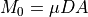
with μ as rigidity of the rock at the fault, D as averaged displacement on the fault and A as fault surface area. For pure shear sources, M0 equals the total seismic moment (MT). The seismic moment can be related to the released seismic energy ES that is proportional to the stress drop Δσ:
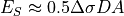
Rearranging both equations yields to:
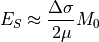
M0 can be determined by the asymptote of the amplitude spectrum at frequency = 0. A common technique for determination of the seismic moment M0 is the moment tensor inversion. Assuming reasonable values for the rigidity of the rock (3-6 x 104 MPa in crust and upper mantle) and the stress drop (2-6 MPa) the seismic moment can be related to the surface wave magnitude Ms by the empirical relationship found by Gutenberg and Richter (1956) (units in cgs):
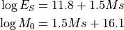
- seismic network
Group of seismic stations that are deployed as single stations or arrays.
- seismic ray
Vector perpendicular to the wave front pointing into the direction of wave propagation and marking behind it the “ray trace”. The propagation of seismic waves can be easily modelled as the propagation of seismic rays following Snell’s Law. This assumption is a reasonable approximation for high frequency waves.
- seismic signal
A coherent transient waveform radiated from a definite, localized seismic source that is usually considered as an useful signal for the location of the source, the analysis of the source process and/or of the propagation medium (in contrast to noise).
- seismic source
A localized area or volume generating coherent, usually transient seismic waveforms, such as an earthquake, explosion, vibrator etc.
- semblance
Normalized beam power.
- SIGMA
- signal-to-noise ratio
The comparison between the amplitude of the seismic signal and the amplitude of the noise; abbreviated as SNR.
- slab
Usually, the part of the lithospheric plate that is underthrusting in a subduction zone and is consumed by the Earth’s mantle is called slab.
- slab pull
The force of gravity causing the cooler and denser oceanic slab to sink into the hotter and less dense mantle material. The downdip component of this force leads to downdip extensional stress in the slab and may produce earthquakes within the subducted slab. Slab pull may also contribute to stress on the subduction thrust fault if the fault is locked.
- slip
The relative displacement of formerly adjacent points on opposite sides of a fault.
- slip model
A kinematic model that describes the amount, distribution, and timing of a slip associated with an earthquake.
- slip rate
How fast the two sides of a fault are slipping relative to one another, as derived from seismic records in case of an earthquake or determined, as a long-term average, from geodetic measurements, from offset man-made structures, or from offset geologic features whose age can be estimated. It is measured parallel to the predominant slip direction or estimated from the vertical or horizontal offset of geologic markers.
- slowness
The inverse of velocity, given in the unit seconds/degree or s/km; a large slowness corresponds to a low velocity.
- SNR
Abbreviation for signal-to-noise ratio.
- source depth
Location of an earthquake below the Earth’s surface. Earthquakes can occur between the surface and depths of about 700 km. Usually three classes of earthquakes are separated according to the depth: Shallow earthquakes occur in the depth range of 0 to 70 km; intermediate earthquakes between 70 and 300km depth; and deep earthquakes between 300 and 700 km depth. Earthquakes at large depths occur much less frequent than shallow earthquakes. Additionally, deep earthquakes excite small surface waves compared to the body waves and relatively simple P and S waveforms with more impulsive onsets. A more reliable way to determine the depth of an earthquake is to identify depth phases (e.g. pP, sP) in the waveforms. At stations with large distance to the epicenter the pP wave follows the direct P wave by a time interval that slightly increases with distance but rapidly with depth. The depth can be derived from this time interval by using travel-time curves.
- source time function
The source time function describes the ground motion generated at the fault over time. The function is predicted by a theoretical model.
- Spooler
Application which watches a directory for new bulletins and performs the final and service specific dissemination operation. This may involve talking to modem (for fax, SMS), connecting to a SMTP server (email) or rendering a Web page.
- station
Site of measurement typically consisting of one or more sensors and one or more dataloggers.
- station magnitude
The station magnitude is the magnitude value based on the amplitude measurements of a single station. Due to radiation pattern, site and path effects and the calibration of the station the station magnitudes of one event can scatter significantly.
QuakeML object
- stick-slip
The rapid displacement that occurs between two sides of a fault when the shear stress on the fault exceeds the frictional stress. Also a jerky, sliding type of motion associated with fault movement in laboratory experiments. It may be a mechanism in shallow earthquakes. Stick -slip displacement on a fault radiates energy in the form of seismic waves.
- stress drop
The difference between the stress across a fault before and after an earthquake. A parameter in many models of the earthquake source that affects the level of high-frequency shaking radiated by the earthquake. Commonly stated in units termed bars or megapascals (1 bar equals 1 kg/cm², and 1 megapascal equals 10 bars).
- T
period, time duration
- takeoff angle
The angle that a seismic ray makes with a downward vertical axis through the source. Rays with takeoff angles less than 90° are labeled with capital letters like P or S. If the takeoff angle is greater than 90° the ray is upgoing and is labeled with lowercase letters (p or s). Such rays can be reflected at the surface near the epicenter forming a depth phase (see pP phase or sP phase).
- teleseismic
Pertaining to a seismic source at distances greater than about 2000 km from the measurement site.
- theoretical onset
The point where an arrival is expected to appear on a seismic record, based on the known location and depth of the seismic source and according to a velocity model.
- time domain
A seismic record is usually presented in the time domain, i.e., as a display of varying amplitudes of (filtered) ground motion as a function of time (in contrast to the equivalent representation in the frequency domain) (see also Fourier analysis).
- TOAST
Tsunami Observation and Simulation Terminal is a very flexible tsunami early warning software with high scalability. TOAST is the perfect complement to SeisComP for the implementation of a fully functional tsunami warning system. TOAST is optimized for its application Tsunami Early Warning. While conventional tsunami early warning systems are based on huge databases of precalculated scenarios. By default TOAST uses an on-the-fly simulation approach. Because of this approach TOAST can react on any atypical events, for example earthquakes in unconsidered areas or earthquakes with untypical rupture mechanisms. Additional to this on-the-fly simulation simulation TOAST s flexible simulation interface also allows integration of existing precalculated scenario databases.
- Tp
predominant period
- Tm
mean period
- total seismic moment (MT)
A measure of the strength of the full moment tensor:
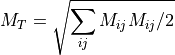
For pure shear sources MT equals seismic moment (M0).
- transfer function
The transfer function of a seismic sensor-recorder system (or of the Earth medium through which seismic waves propagate) describes the frequency-dependent amplification, damping and phase distortion of seismic signals by a specific sensor-recorder (or medium). The modulus (real term = absolute value) of the transfer function is termed the frequency response function or magnification curve, e.g. of a seismograph.
- travel time
The time required for a wave traveling from its source to a point of observation.
- travel-time curve
A graph of arrival times, commonly of direct as well as multiply reflected and converted P or S waves, recorded at different points as a function of distance from the seismic source. Seismic velocities within the Earth can be computed from the slopes of the resulting curves.
- XXL event
An event based on XXL picks.
- XXL pick
Picks that have extraordinarily large amplitudes and large SNR and that lie within a relatively small region.
- vespagram
Vespagrams are diagrams of beam traces over time typically formed for a particular azimuth (or backazimuth) and for ranges of slowness (slowness vespagram). When the slowness is kept constant and the backazimuth is varied the term backazimuth vespagram is used.
- Wadati-Benioff zone
A dipping planar (flat) zone of earthquakes that is produced by the interaction of a downgoing oceanic crustal plate with a continental plate. These earthquakes can be produced by slip along the subduction thrust fault (thrust interface between the continental and the oceanic plate) or by slip on faults within the downgoing plate as a result of bending and extension as the plate is pulled into the mantle. Slip may also initiate between adjacent segments of downgoing plates. Wadati-Benioff zones are usually well-developed along the trenches of the Circum-Pacific belt, dipping towards the continents.
- wave number
Number of cycles of a repeating signal per unit length, typically per meter of kilometer.
- P wave
P (primary) waves are compressional waves involving volumetric variations in the media. The sense of particle motion is linear and parallel to the propagation direction. P waves are body waves that traverse the interior of a body/Earth and can propagate in fluids.
The general nomenclature for P waves: At local and regional distances a special nomenclature is used to describe the travel path of the first P and S arrivals. Pg, Pb/P* and Pn phases are separated. Pg is the direct P wave arriving first in distances less than around 100 km. Pn is the head wave along the Moho arriving first at larger distances than 100 km (depending on the crustal thickness). Pn has usually smaller amplitudes than Pg. Pb or P* is the rarely observed head wave travelling along the midcrustal velocity discontinuity. The general nomenclature of P waves entitles reflections at the topside of boundaries with lowercase letters (m – Moho reflection; c - CMB reflection; i - inner core-outer core boundary reflection), e.g. PmP is a reflected P wave at the Moho. Reflections at the bottom side of boundaries get no additional letter, e.g. PP is a reflected P wave at the Earth’s surface. Refracted rays get capital letters (K - through the outer core; I - through the inner core), e.g. PKIKP is a P wave traversing the crust/mantle, the outer core, the inner core, again the outer core and again the mantle/crust.
- S wave
S (secondary) waves are shear waves without any volumetric variation in the media. The sense of particle motion is perpendicular to the propagation direction. S waves are body waves that traverse the interior of a body but can not propagate in fluids.
Analog to the P arrivals Sg, Sb/S* and Sn arrivals are distinguished in local and regional distances. The general nomenclature of S waves is analog to the P waves. The reflections at the topside of boundaries have lowercase letters (m - Moho reflection; c - CMB reflection), e.g. SmS is a reflected S wave at the Moho. Reflections at the bottom side of boundaries get no additional letter, e.g. SS is a reflected S wave at the Earth’s surface. Refracted rays get capital letters (J - through the inner core), e.g. SKJKS is a S wave traversing the crust/mantle, the outer core as a P wave, the inner core as a S wave, again the outer core as a P wave and again the mantle/crust as S wave. S waves can not travel through the outer core because the outer core consists of a fluid.
- surface wave
Surface waves are seismic waves observed only at the free surface of the media. Two types of surface waves are distinguished: Love waves (L) and Rayleigh waves (R). Both result from the interaction of P and S waves near the free surface.
- waveform (data)
The complete analog or sufficiently dense sampled digital representation of a continuous wave group (e.g., of a seismic phase) or of a whole wave train (seismogram). Accordingly, waveform data allow to reconstruct and analyze the whole seismic phase or earthquake record both in the time and frequency domain whereas parameter data describe the signal only by a very limited number of more or less representative measurements such as onset time, maximum signal amplitude and related period.
- waveformID
Attribute of the QuakeML objects Pick, !StationAmplitude and !StationMagnitude describing the source of the underlying waveform source. The WaveformID contains information about the !NetworkCode, !StationCode, !LocationCode and !ChannelCode
- wave front
The surface formed by all elements of a propagating wave, which swing in phase; the wave front is perpendicular to the seismic rays, which are oriented in direction of wave propagation.
- wavelength
The distance between successive points of equal amplitude and phase on a wave (for example, crest to crest or trough to trough).
- weight
Attribute of the QuakeML objects Arrival and !MagnitudeReferences defining the effect of the referenced object (e.g. Pick).
- WWSSN_SP
Short period seismograph with a dominant period of 1 s of the World-Wide Standard Seismograph Network (WWSSN).
- WWSSN_LP
Long period seismograph with a dominant period of 20 s of the World-Wide Standard Seismograph Network (WWSSN).
- XML
Extensible Markup Language
{kind=link}
Distance terms¶
- distance, epicentral
The epicentral distance is defined as the shortest distance from a seismic station or any other site to the epicentre of the seismic event.
- distance, hypocentral
The hypocentral distance is defined as the shortest distance from a seismic station or any other site to the hypocentre of the seismic event.
- distance, Joyner-Boore
The Joyner-Boore distance is defined as the shortest distance from a seismic station or any other site to the surface projection of the rupture surface of the seismic event.
- distance, rupture
The rupture distance is defined as the shortest distance from a seismic station or any other site to the rupture surface of the seismic event.
{kind=link}
{kind=link}
{kind=link}
{kind=link}